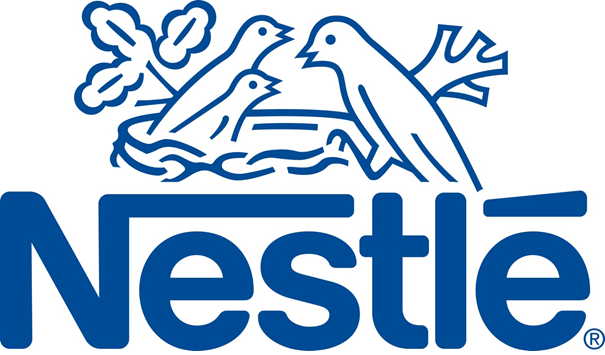
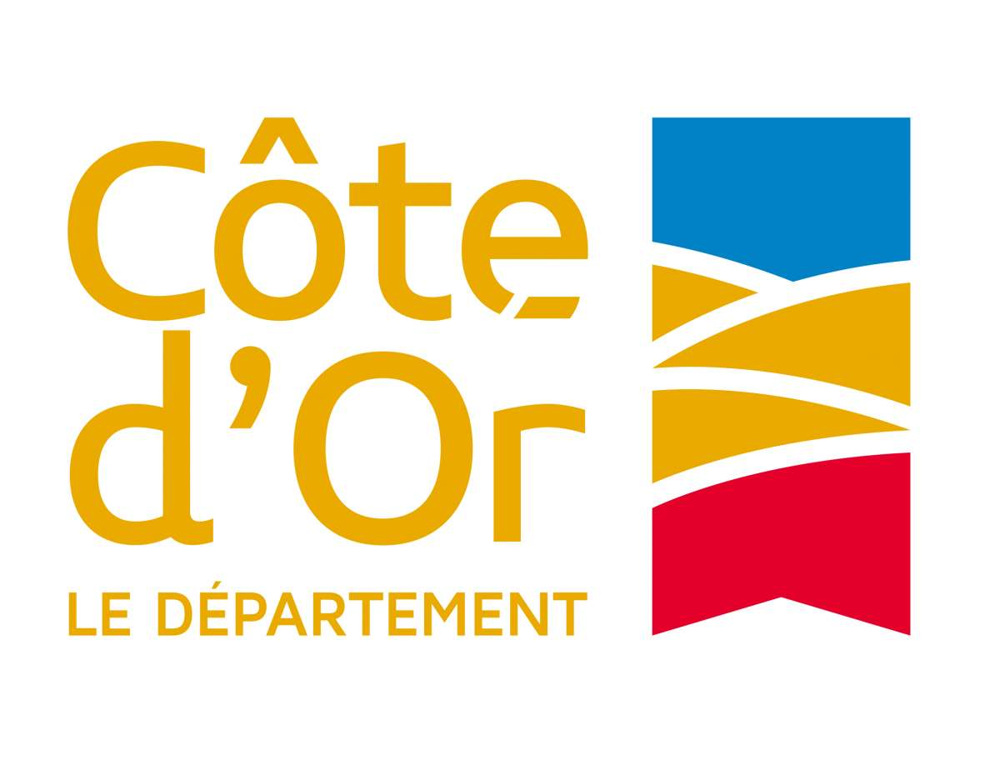
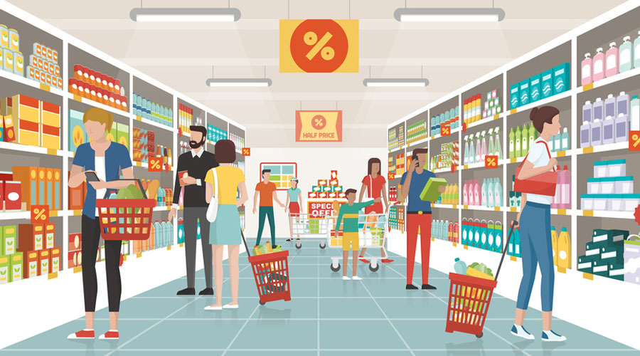
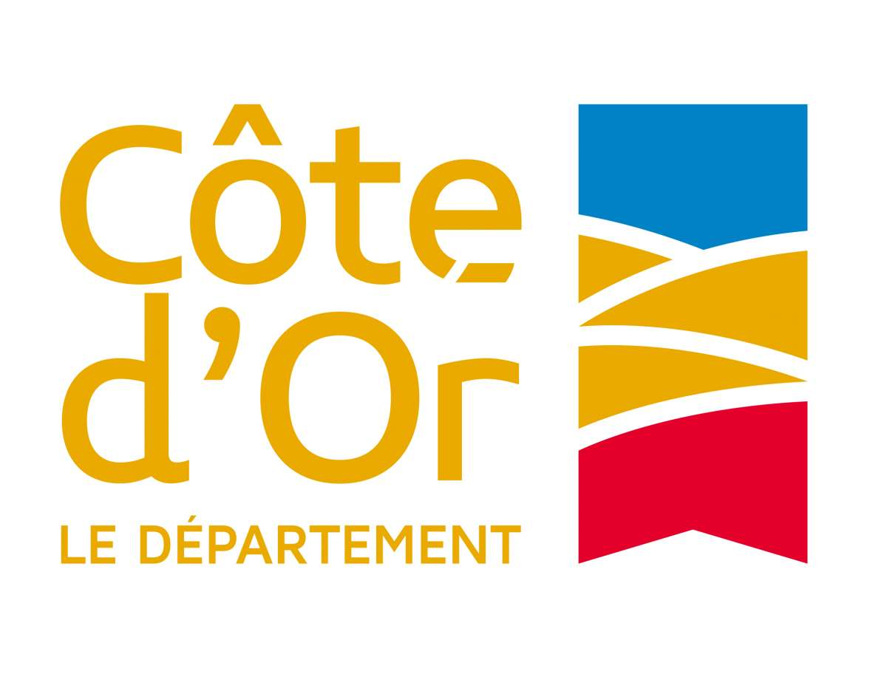
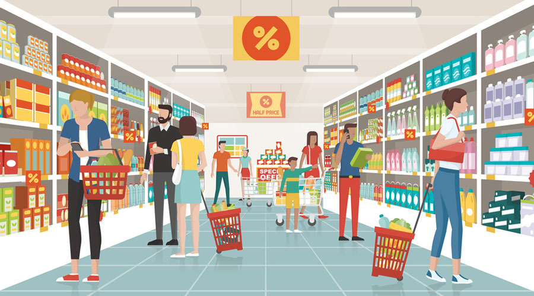
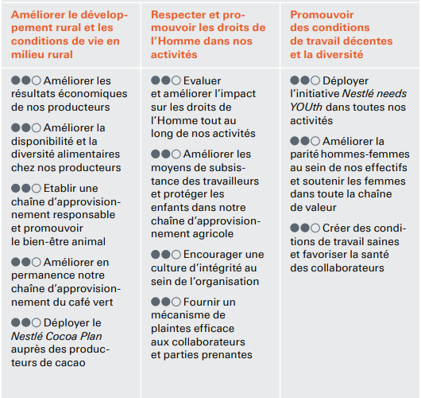

Le développement durable chez Nestlé
Yan BUATOIS | Amine EL ALAOUI | Conrad TAGUE-FOE | Colin BRACQ | Eudes CHATIN
Plan
Présentation de Nestlé
- Effectif : 308 000 personnes environ
- Chiffre d'affaires : Presque 85 milliards d'euros
- Résultat : Plus de 9 milliards d'euros
- Premier groupe alimentaire mondial
Politique de Nestlé
Les parties-prenantes de l'entreprise
 



Actions autour du Développement Durable
Droits de l'Homme
D'ici 2030 : Améliorer 30 millions de vie au sein de communautés en lien avec leurs activités opérationnelles :
- Évaluer et améliorer l'impact sur les droits de l'Homme tout au long des activités de Nestlé
- Améliorer les moyens de subsistance des travailleurs et protéger les enfants
- Encourager une culture de l'intégrité au sein de l'organisation
- Former tous les salariés aux droits de l'Homme
Loyauté des pratiques
Communautés et développement local
Relations et conditions de travail
- Le management Nestlé travaille chaque jour à créer et garantir des relations individuelles et collectives positives.
- Nestlé s’engage à mettre intégralement en œuvre ses Principes de conduite des affaires.
- La Société se conforme aux lois en vigueur dans les pays dans lesquels elle est implantée.
Amélioration continue des conditions de travail
- Respecter les droits de leurs employés à créer et rejoindre les organismes de leur choix
- Proposer à leurs employés des salaires et avantages compétitifs
- Respecter les directives du Groupe concernant les « Employés temporaires ».
- Traiter chaque employé dignement.
Environnement
- Favoriser la consommation de produits végétaux
- Atteindre une performance maximale dans la gestion d’eau
- Limiter l’impact environnementale des emballages
Questions relatives aux consommateurs
- Donner des repères pour une alimentation plus équilibrée
- Encourager des comportements plus propices à la santé
- Sensibiliser les nouvelles générations à mieux manger
Gouvernance et Organisation
- Conseil d'administration
- Direction
Conclusion...
Sources
- Rapport annuel 2018 de Nestlé :
https://www.nestle.fr/sites/g/files/pydnoa566/files/asset-library/documents/csv/rapport%20annuel%202018.pdf - Communiqués de presse de Nestlé :
https://www.nestle.fr/media/pressreleases - Rapport sur le Développement Durable de Nestlé :
https://www.nestle.com/sites/default/files/asset-library/documents/reports/csv%20reports/environmental%20sustainability/sustainability_review_french.pdf